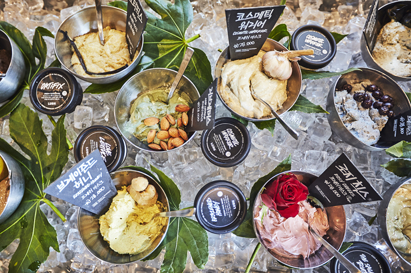

홈 > 브랜드 매거진 > 러쉬
러쉬
러쉬(LUSH)는 신선한 천연 원료로 만든 핸드메이드 화장품을 판매하는 영국 코스메틱 브랜드이다.
산업 분야 뷰티·퍼스널케어 · 공개 등급 매거진 완성 · 브랜드 평가 5 ★


한눈에 보는 브랜드
러쉬(Lush)는 1995년 영국 남부 항구도시 풀(Poole)의 하이스트리트 매장에서 출발한 핸드메이드 코스메틱 브랜드다. 모발 전문가(트리콜로지스트) 마크 콘스탄틴과 아내 모 콘스탄틴, 로웨나 버드, 헬렌 암브로센, 리즈 위어, 폴 그리브스 등 여섯 명이 공동 창업했다.
신선한 과일과 채소를 갈아 만드는 식료품점 같은 매장 콘셉트와 포장을 없앤 고체 제품으로 차별화했다. 첫 전환점은 1996년 캐나다 밴쿠버에 연 첫 해외 매장이고, 두 번째 전환점은 2021년 주요 소셜미디어 철수 선언이다.
현재 20개국 이상에서 사업을 펼치며 그룹 연매출은 약 6억 7,500만 파운드, 임직원은 약 1만 3,300명 규모다.
브랜드 관점
러쉬의 핵심은 광고가 아니라 매장 그 자체를 마케팅 매체로 삼는 감각형 소매다. 비누를 치즈처럼 잘라 진열하고 페이스 마스크를 얼음 위에 올려 식료품점 분위기를 연출하며, 향과 색으로 행인을 끌어들이는 살아 있는 광고판처럼 매장을 운영한다.
같은 윤리적 뿌리를 가진 더바디샵이 정돈된 진열과 중도적 가격, 차분한 활동주의로 대중성을 노린다면, 러쉬는 신선도(식품처럼 표기하는 제조일과 사용기한), 포장 최소화, 더 도발적인 캠페인으로 18~35세 가치 소비층을 정조준한다. 2021년 11월 인스타그램·페이스북·틱톡·스냅챗 계정을 동시에 닫은 결정은 상징적이다.
마크 콘스탄틴은 청소년 정신건강 위해를 이유로 약 1,000만 파운드 손실도 감수하겠다고 밝혔다. 추적형 디지털 광고에 기대지 않겠다는 선언으로, 데이터 기반 성장이 표준이 된 뷰티 업계에서 역행에 가까운 베팅이었다.
한국은 러쉬의 네 번째 해외 진출국으로 백화점과 번화가 매장에서 모든 제품을 직접 체험하게 하는 동시에, 전 세계에서 가장 비싼 가격대로 판매되는 시장이라는 양면성을 보인다.
시작과 성장
창업의 배경에는 두 번의 실패가 있다. 마크 콘스탄틴은 풀로 돌아와 프리랜서 화장품 일을 하며 더바디샵 창립자 아니타 로딕에게 샴푸 같은 자작 샘플을 보내 납품을 시작했다.
이후 지식재산권 갈등 끝에 1991년 자신의 회사를 약 1,700만 파운드에 로딕에게 매각했다. 그 자본을 통신판매 스타트업 코스메틱스 투 고에 재투자했지만 가격을 지나치게 낮게 책정한 탓에 1994년 파산했다.
이 경험을 발판으로 1995년 풀 하이스트리트 29번지에 러쉬 1호점을 열고, 신선한 과채를 직접 갈아 만드는 제품으로 다시 출발했다. 초기 대표 제품은 물에 넣으면 색과 향이 퍼지는 배스밤과 버블바였다.
첫 번째 전환점은 1996년 캐나다 밴쿠버 덴먼스트리트 1118번지에 연 첫 해외 매장이며, 두 번째는 1997년 크로아티아·호주·프랑스로 이어진 다국가 동시 확장이다. 이 시기에 영국을 넘어 북미·유럽·아시아태평양으로 발판을 넓혔다.
브랜드 아이덴티티
러쉬의 가치관은 명확하다. 30년 넘게 동물실험에 반대해 왔고, 모든 제품이 100% 베지테리언이며 라인업의 89%가 비건이다.
포장을 없앤 네이키드 제품이 판매 지역에 따라 전체의 30~50%를 차지하고, 재료의 산지·제조 시점·만든 사람까지 포장에 표기하는 윤리적 구매를 내세운다. 시각 정체성은 일관성이 핵심이다.
전 세계 매장이 거의 같은 디자인을 공유하고, 안내문과 제품명·가격을 손글씨 서체로 적어 수작업의 인상을 강화한다. 검은 바탕에 흰 글씨, '프레쉬 핸드메이드 코스메틱스' 태그라인이 매장과 제품 전반에 반복된다.
타깃은 윤리적 소싱과 환경, 동물권을 가격이나 명품 위신보다 우선하는 18~35세 의식 있는 소비자다. 브랜드 보이스는 명품 특유의 딱딱하고 중후한 톤과 달리 유쾌하고 자유분방하며, 캠페인에서는 거침없는 활동주의를 드러낸다.
제품과 서비스
제품군은 입욕 카테고리를 중심으로 배스밤, 버블바, 샤워 젤리, 보디 스프레이, 비누, 헤어·스킨케어, 수면을 돕는 슬리피(Sleepy) 컬렉션 등으로 넓다. 대표 시그니처는 핑크빛 거품을 천천히 퍼뜨리는 더 컴포터(The Comforter) 배스밤으로, 같은 향이 버블바 등 여러 형태로도 나온다.
가격대는 영국 기준 더 컴포터 배스밤이 한 개 약 4파운드 안팎으로, 부담 없이 시도하는 소비를 겨냥한다. 다만 한국은 전 세계 러쉬 매장 가운데 가장 비싼 시장으로 꼽혀, 물가가 높은 영국·미국·일본보다도 두 배가량 높은 가격에 팔린다.
유통은 직영 매장과 자사 온라인몰을 중심으로 하며, 한국에서는 백화점과 주요 번화가 매장에서 모든 제품을 직접 써볼 수 있게 한다.
현재 상태
본사는 영국 풀에 있다. 모회사는 콘스탄틴 가족과 공동 창업자들이 지배하는 비상장 기업으로, 지분 구조 세부는 미공개다.
임직원은 소매·디지털·제조·지원을 포함한 그룹 기준 약 1만 3,300명이다. 매장은 20개국 이상에서 운영되며, 2024년 기준 영국 약 102개, 일본 약 77개 매장을 두고 있다.
그룹 연매출은 약 6억 7,500만 파운드 수준이며, 2025년 단일 국가로는 영국이 약 3억 1,980만 파운드로 가장 컸고 미국이 전체의 31%를 차지했다.
타임라인
BI/CI 변천사
함께 읽을 브랜드
 뷰티·퍼스널케어 · 매거진 완성더바디샵
뷰티·퍼스널케어 · 매거진 완성더바디샵더바디샵은 화장품을 윤리적 소비와 사회적 메시지를 담는 매개로 확장한 브랜드다. 제품의 효능만큼이나 동물실험 반대, 공정 거래, 환경 의식 같은 태도가 브랜드 선택의...
 뷰티·퍼스널케어 · 자료 기반달바
뷰티·퍼스널케어 · 자료 기반달바달바는 2016년 비모뉴먼트라는 이름으로 출발한 프리미엄 비건 스킨케어 브랜드다. 이탈리아 피에몬테 알바의 화이트 트러플을 핵심 성분으로 내세워 '이탈리안 뷰티'를...
 뷰티·퍼스널케어 · 자료 기반이니스프리
뷰티·퍼스널케어 · 자료 기반이니스프리이니스프리(Innisfree)는 아모레퍼시픽이 2000년 론칭한 대한민국의 자연주의 뷰티 브랜드다. 제주 원료를 내세운 스킨케어·색조로 아모레퍼시픽 자연주의 1호 브...
 뷰티·퍼스널케어 · 편집 검수니베아
뷰티·퍼스널케어 · 편집 검수니베아니베아(NIVEA)는 1911년 독일 바이어스도르프(Beiersdorf)가 출시한 글로벌 스킨케어 브랜드다. 세계 최초의 안정적인 유중수(油中水) 유화 크림을 선보이...
 뷰티·퍼스널케어 · 편집 검수도브
뷰티·퍼스널케어 · 편집 검수도브도브(Dove)는 유니레버가 1957년 출시한 비누·바디케어 퍼스널케어 브랜드이다.
 뷰티·퍼스널케어 · 편집 검수베네피트
뷰티·퍼스널케어 · 편집 검수베네피트베네핏 코스메틱스(Benefit Cosmetics)는 1976년 쌍둥이 자매 진·제인 포드가 미국 샌프란시스코에서 창업한 화장품 브랜드로, 1999년 LVMH가 인수...
 뷰티·퍼스널케어 · 자료 기반LG생활건강
뷰티·퍼스널케어 · 자료 기반LG생활건강LG생활건강(LG H&H Co., Ltd.)은 화장품·생활용품·음료를 아우르는 한국 기업으로, 현 법인은 2001년 LG화학에서 분할 신설됐다.
 뷰티·퍼스널케어 · 자료 기반코스맥스
뷰티·퍼스널케어 · 자료 기반코스맥스코스맥스(COSMAX)는 1992년 설립된 한국의 화장품 ODM 기업으로, 세계 1위 화장품 ODM 제조사로 꼽힌다.